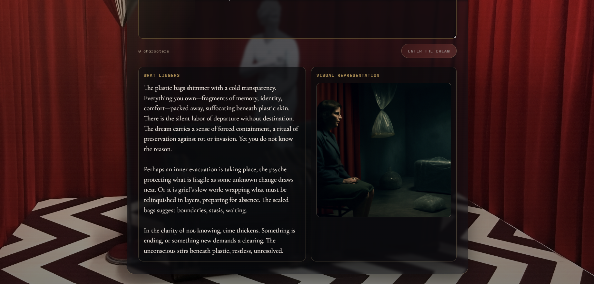

2026 / Web Application
Lynch Dream Machine
A web application where users enter a dream, receive a Lynchian image of it, and get a symbolic analysis grounded in Jungian psychology.
- Flask
- Python
- OpenAI API

Overview
Project description
This web application analyzes dreams through a model guided by Jung's analytical psychology, treating dreams symbolically rather than as straightforward narratives. Its interpretive logic focuses on archetypal figures, emotional tone, unconscious tensions, and themes of individuation.
By combining Jungian psychology with David Lynch's world, the system is constrained toward symbolism, ambiguity, and speculative meaning. The result is both a written interpretation of the dream and an image rendered in a Lynch-inspired visual language.
Interface image
Still image from the live project interface.
